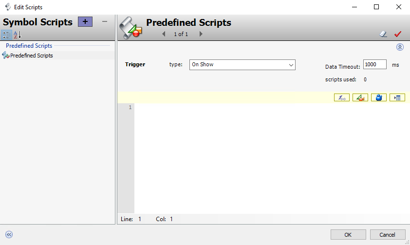
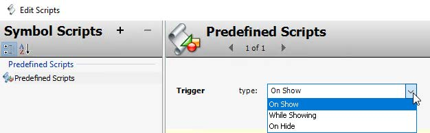
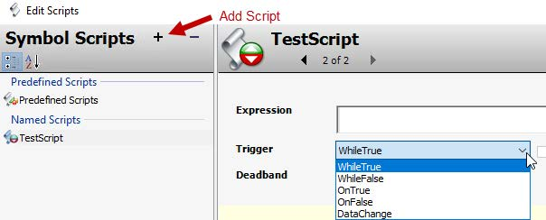
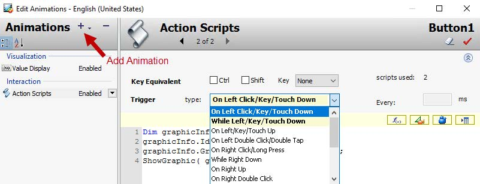
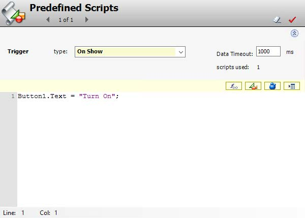

Module 13 — Scripting in Graphics | Pages 687-692
Page 13-3, Section 1 – Introduction.
• Gray Intro Box: Overview of scripting environment, symbol scripts, and layout scripts
• Introduction Subsection:
• Scripts attached to symbols or layouts using QuickScript .NET
• Supports assignments, math functions, conditional branching/looping
• References to object properties, element/symbol attributes, ViewApp settings, local variables
• Runtime methods like ShowLoginDialog()
• Execution Order of Symbol and Layout Scripts:
• Symbol scripts execute before layout scripts
• Exception: On Hide layout scripts run before symbol scripts
• Data Change triggered scripts run first time reference is subscribed to
• Footer: AVEVA™ Operations Management Interface 2023]
Section 1 – Introduction
Section 1 – Introduction
Introduction
You can add scripts to symbols or their elements to animate the symbols or modify their elements
while a ViewApp is running. You can also add scripts to layouts to customize the runtime behavior
of the layouts and layout content. You use the QuickScript .NET scripting language to write the
scripts.
Scripts can include assignments, comparisons, simple math functions, and similar actions. They
can also include logical operations using conditional branching, code looping, and more. The
references that can be used in scripts include attributes of automation objects, properties of
elements and embedded symbols, custom properties, and attributes of the ViewApp. Local
variables can also be defined within the scripts.
Additionally, supported methods can be used in the scripts to perform various functions at runtime.
For example, you can use ShowLoginDialog() method in a script, so that when the script is
executed at runtime, it will prompt with the login dialog box if security in the Galaxy is enabled.
Execution Order of Symbol and Layout Scripts
In general, symbol scripts run before layout scripts run in a running ViewApp. This is to ensure that
any references within the layout script will exist when a layout script calls the reference. The
exception to this rule is a layout On Hide script, which, when triggered by the layout closing, will
run before any symbol scripts that are still waiting to execute.
Note the following:
The On Hide layout script has precedence over symbol scripts.
Symbol scripts have precedence over the On Show layout script.
Named layout scripts can run in any order (not necessarily in the listed order), and may be
interspersed with symbol scripts.
Any named script that is triggered by the Data Change trigger type runs the first time when
the reference is subscribed to. This behavior is different than the Data Change trigger
behavior of Application Server scripts and can take considerable time in intermittent
networks.
This section provides an overview of the scripting environment and introduces symbol scripts and
layout scripts.
Page 13-4, Section Title Page.
• Blank page with only header and footer
• Header: 13-4, Module 13 – Scripting in Graphics
• Watermark: "Do Not Copy"
• Footer: AVEVA™ Training]

Page 13-5, Section 2 – Symbol Scripts.
• Gray Text Box: "This section describes predefined and named symbol scripts, explains script triggers, and describes the Action Scripts animation."
• Introduction: Scripts added to symbols via Edit Scripts dialog (right-click canvas > Scripts)
• Screenshot - Edit Scripts Dialog:
• Left Pane: Symbol Scripts tree with Predefined Scripts (expanded), + button to add
• Right Pane: Predefined Scripts configuration:
• Trigger section: type dropdown (On Show), Data Timeout: 1000 ms, scripts used: 0
• Script editor area (empty), Line: 1 Col: 1
• Toolbar icons: Test (green play), Check (yellow triangle), Confirm (blue check)
• Bottom: OK, Cancel buttons
• Bullet List - Symbol Script Capabilities:
• Configure predefined scripts
• Add named scripts
• Edit/rename/remove named scripts
• Substitute references
• Use element methods
• Footer: AVEVA™ Operations Management Interface 2023]
Section 2 – Symbol Scripts
Section 2 – Symbol Scripts
Introduction
You can add scripts to symbols to animate the symbols or modify their elements while a view
application is running. You can add a script to a symbol with the Edit Scripts dialog box. From the
Graphic Editor, right-click the drawing canvas and select Scripts to display the dialog box.
With symbol scripts, you can:
Configure the predefined scripts for a symbol
Add named scripts to a symbol
Edit existing named or predefined scripts in a symbol
Rename named scripts in a symbol
Remove named scripts from a symbol
Substitute references in predefined or named scripts
Use element methods in named or predefined scripts
This section describes predefined and named symbol scripts, explains script triggers, and
describes the Action Scripts animation.


Page 13-6, Types of Symbol Scripts and Triggers.
• Predefined Symbol Scripts:
• On Show: Runs once when symbol opens/becomes visible
• While Showing: Runs periodically while symbol visible
• On Hide: Runs once when symbol closes/becomes hidden
• Screenshot 1 - Predefined Scripts Trigger Dropdown:
• Left: Symbol Scripts with +, -, sort buttons, Predefined Scripts selected
• Right: Trigger type dropdown showing On Show, While Showing, On Hide
• Named Symbol Scripts:
• WhileTrue: Runs while expression is True
• WhileFalse: Runs while expression is False
• OnTrue: Runs on False→True transition
• OnFalse: Runs on True→False transition
• DataChange: Runs when value/quality changes
• Screenshot 2 - Named Scripts Configuration:
• Left: Named Scripts with TestScript selected, red arrow on + Add button
• Right: Expression field, Trigger dropdown (WhileTrue selected), Deadband field
• Footer: AVEVA™ Training]
Types of Symbol Scripts and Triggers
You can use predefined and named scripts for symbols. The following sections describe the types
of symbol scripts and applicable triggers.
Predefined Symbol Scripts
Predefined symbol scripts run based on the display of the symbol in the running view application.
The predefined script triggers are On Show, While Showing, and On Hide. Based on how the
trigger is configured, predefined symbol scripts can run:
Once after the symbol opens or is shown (On Show)
Periodically while the symbol appears in a running view application (While Showing)
Once after the symbol closes or is hidden (On Hide)
Named Symbol Scripts
You can add a named script by clicking the Add Script button. Named scripts run when an
expression or references associated with the script change state. The expression in the
Expression field acts as a data source for the script trigger.
Predefined triggers are WhileTrue, WhileFalse, OnTrue, OnFalse, and DataChange. Based on
how the trigger is configured, named symbol scripts can run:
While the trigger expression is true (WhileTrue)
While the trigger expression is false (WhileFalse)
When the trigger expression transitions from false to true (OnTrue)
When the trigger expression transitions from true to false (OnFalse)
When data associated with the trigger expression changes value or its quality state
changes value. (DataChange)

Page 13-7, Action Scripts Animation.
• Text: Add Action Scripts via Edit Animations dialog (double-click element > Add Animation > Action Scripts)
• Triggers: On Left Click, While Left, On Left Double-Click, etc.
• Symbol Script Development Environment: Script Function Browser, Graphic Browser, autocomplete, Clear Value icon, Validate Value icon
• Screenshot - Edit Animations Dialog:
• Left Pane: Animations list - Visualization, Its: Value Display, Interaction > Action Scripts (highlighted blue, Enabled)
• Red arrow annotation: "Add Animation" pointing to + button
• Right Pane - Action Scripts Details:
• Preview: Button1 label
• Key Equivalent: Ctrl, Shift checkboxes, Key dropdown (None)
• Trigger Type dropdown (expanded): On Left Click/Key/Touch Down, While Left/Key/Touch Down, On Left/Key/Touch Up, On Left Double Click/Double Tap, On Right Click/Long Press, While Right Down, On Right Up, On Right Double Click
• Every: ms field (empty)
• Script Editor: Code with Dim graphicInfo, graphicInfo.Is, ShowGraphic(...)
• Footer: AVEVA™ Operations Management Interface 2023]
Section 2 – Symbol Scripts
Action Scripts Animation
You can add an Action Scripts animation to a graphic element with the Edit Animations dialog box.
From the Graphic Editor, double-click an element on the drawing canvas. The Edit Animations
dialog box appears. Click the Add Animation button and then select the Action Scripts animation.
Triggers to use for an Action Scripts animation include On Left Click, While Left, On Left Double-
Click, and so on, as shown below. One or more action scripts can be added to a graphic element.
Additionally, Action Scripts animations can be added for an embedded symbol, but the embedded
symbol must be configured with the TreatAsIcon property set to True.
At runtime, action scripts execute one time or periodically when an operator performs a mouse
action. Mouse actions include mouse clicks, double-clicks, hovering, and so on.
Symbol Script Development Environment
When writing the code for a script, you can use the Script Function Browser, Graphic Browser,
Automation Object Browser, and the Attribute Browser to select external data. The script editor
supports autocomplete.
The Clear Value icon on the top right of the script editor can be used to clear all code written for the
script. The Validate Value icon can be used to validate all code for the script, and if there are any
warnings or errors, they will be indicated in the script editor. If the validation succeeds, no
message is provided.

Page 13-8, Module 13 – Scripting in Graphics.
• Text: Additional configurations for different trigger types (e.g., On Show allows Data Timeout configuration)
• Screenshot - Predefined Scripts Window:
• Title: Predefined Scripts with script icon
• Window controls: Minimize, Close (red X), Checkmark (save)
• Script navigation: 1 of 1 with arrows
• Trigger Section:
• type: On Show (selected)
• Data Timeout: 1000 ms
• scripts used: 1
• Script Editor (yellow-highlighted):
• Line 1: Button1.Text = "Turn On";
• Toolbar: Save, Undo, Redo, Run/Execute icons
• Cursor: Line: 1 Col: 1
• Footer: AVEVA™ Training]
Additional configurations are available for different types of scripts. For example, if the trigger type
is On Show, you can configure the Data Timeout in milliseconds.
Review the key concepts section above for the core topics discussed.
Consider how the concepts in this lesson fit into the broader System Platform and OMI framework.